So you've decided to build your next groundbreaking web app, but you don't know where to start.
You need to remember to install your client-side dependencies (bower), server side dependencies (npm / node), testing suites, css frameworks / preprocessors, html templating engines, js frameworks, build tools, linters, minification, etc... etc... AND on top of that you need to make sure to construct the application's file structure correctly and ensure that everything is communicating as expected.
Sounds like hours of unneccessary work / potential productivity time to me...
Yeoman to the Rescue!
Have you ever had the experience of going to the grocery store only to find out that all of your items on your grocery list are already in your cart and all you need to do is checkout? No? Neither have I.
But this is essentially what Yeoman provides for you. A space where you get to choose all the tools you want in your optimal dev environment. All you need to do is select which parts you want in your machine before initializing, and Yeoman builds out the application file structure for you, souped-up and ready to go. Yeoman provides 'generators' which can be called with the 'yo' command to scaffold your app.
How do I start?
If you don't already have node/npm, you'll need to get those first. Open up your terminal and type in the following command to check.
node -v && npm -v
If you don't have node, go check out Node's site to get up and running. Installing Node will also give you npm.
Once you have node / npm, you'll want to globally install some command line tools to get up and running if you don't already have them. Specifically, you're going to need Yeoman, Bower and either Grunt or Gulp as a build tool. I recommend installing both and trying either out to see which works for you. The following command will do this for you. Note that if you are getting errors, you may need to prepend the entire command with "sudo" to allow root access.
npm install -g yo bower grunt-cli gulp
You are now ready to rock.
Using Generators
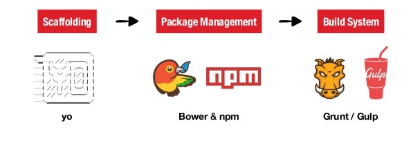 Let me preface by saying that there are so many Yeoman generators out there that you can essentially create any combination of tools that you could ever want. In the following example I will show you how to set up the structure for an Angular app with jQuery, Bootstrap (with Stylus as the CSS preprocessor), Jade as an HTML templating engine, Jasmine / Mocha for testing, Gulp as the build system, and a few other tools to get you up and running ASAP.
First, let's install the Yeoman generator that you'll be using to get you up and running with Angular / Gulp.
npm install -g generator-gulp-angular
Next create a directory for your project and cd into that directory.
mkdir myapp && cd myapp
Type 'yo'. This will prompt Yeoman to ask you what you want to do.
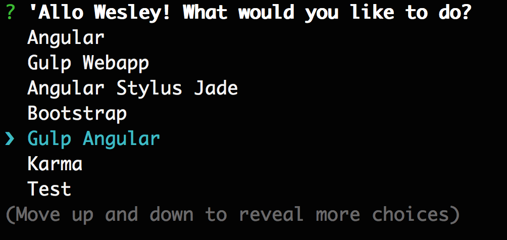
You may have less options (or more) than shown in the picture above. These are the different Yeoman generators. For this demo, we are going to select Gulp Angular and my preferred selections will be highlighted in green. Hit enter.
Next, select which version of Angular you want.
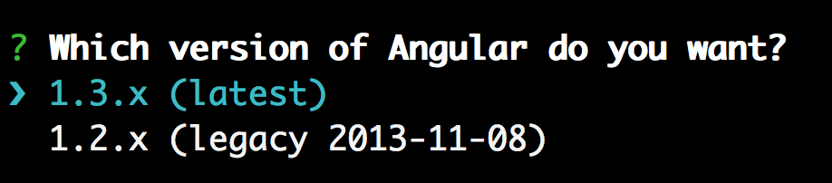
Select your Angular modules.
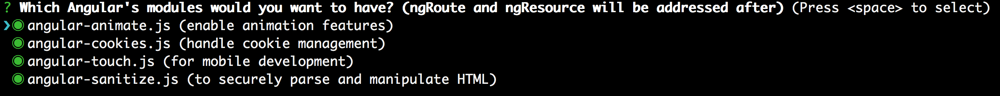
Select the version of jQuery you want for your project.
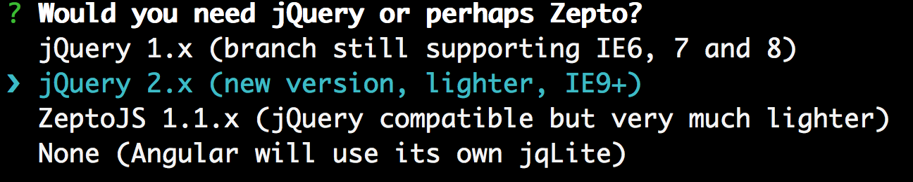
Choose a REST resource library.
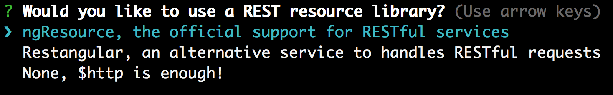
Choose a router.
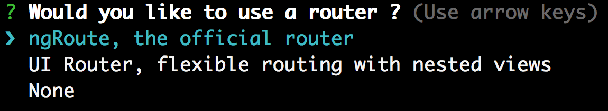
Select your favorite UI framework!
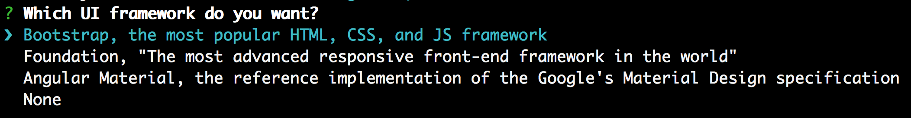
Select how you want your UI framework components.
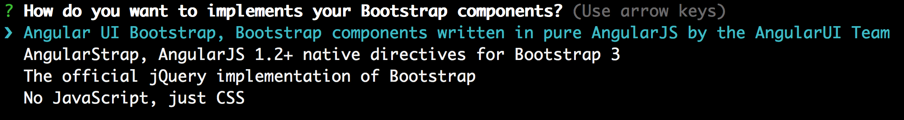
Choose your preferred CSS preprocessor! My favorite is Stylus :)
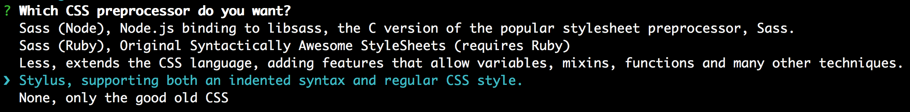
Select your JavaScript preprocessor if any (I will opt for JS in it's purest form, though I am a big CoffeeScript fan as well!)
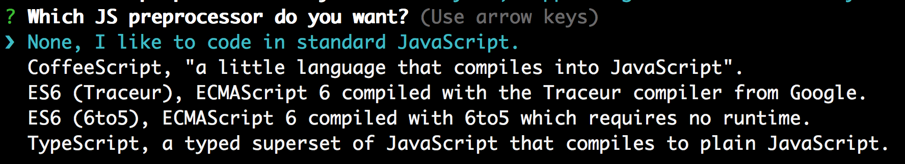
Pick an html templating engine! I'm hopping on the Jade train.
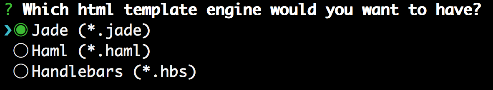
AND YOU'RE GOOD TO GO. Let the Yeoman gods take care of the rest.
From here, Yeoman will call bower install and npm install to install all of your dependencies and build out your app. If you encounter any access errors, you may need to npm install your dependencies yourself with "sudo npm install".
Now comes the really fun part. Once your dependencies have finished installing, from the home directory of your app, type the following to fire up gulp and serve your app:
gulp serve
Your terminal should look something this. On entering the command above, gulp begins to watch all of your files and serves your app up on localhost at port 3000 (or another near if 3000 is taken).
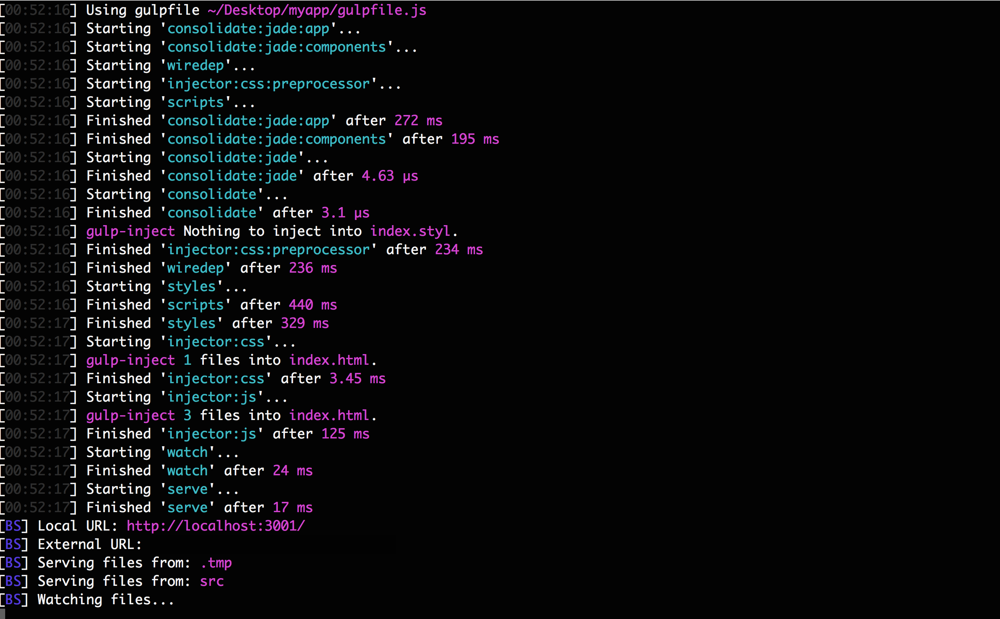
You should automatically be directed to your default browser to localhost:port where a dummy front page of your app should be waiting patiently, including links to all of your installed dependencies / tools!
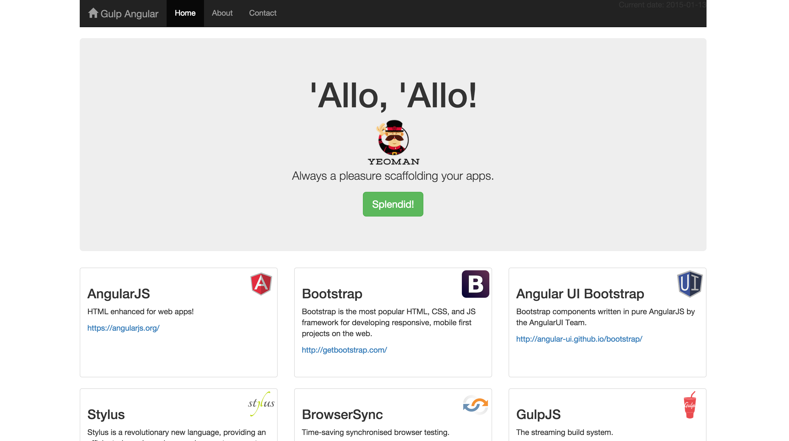
Now head over to your favorite text editor and open up all of your directories' files.
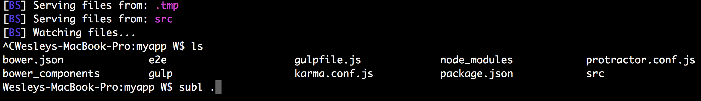
Check out that file structure!!!
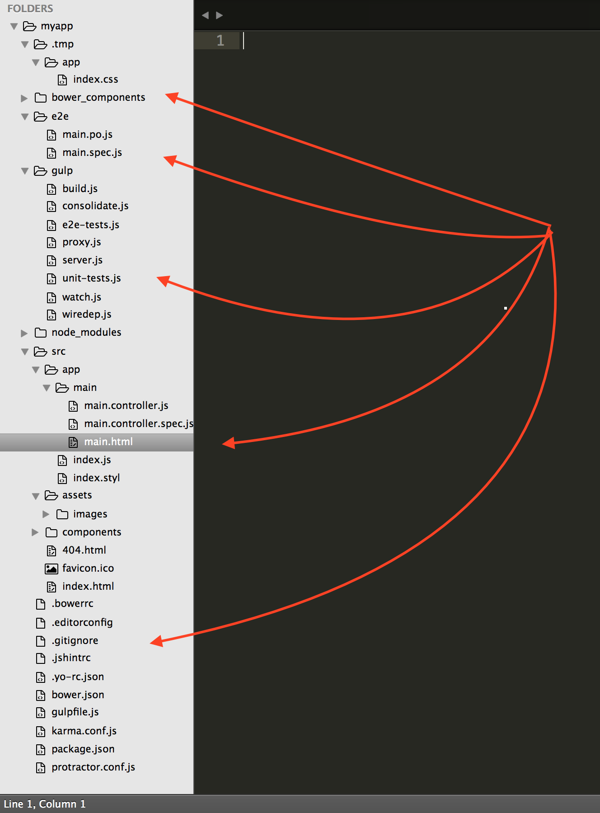
Gulp FTW
And since we can just call 'gulp serve' for gulp to watch for changes in our files in real time, we can update our app, save the files, and see the changes rendered in the browser instantly, all without needing to refresh the page.
Eg. changing our stylus from this:
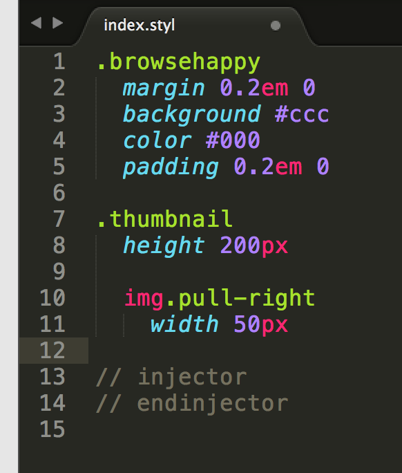
...to this... 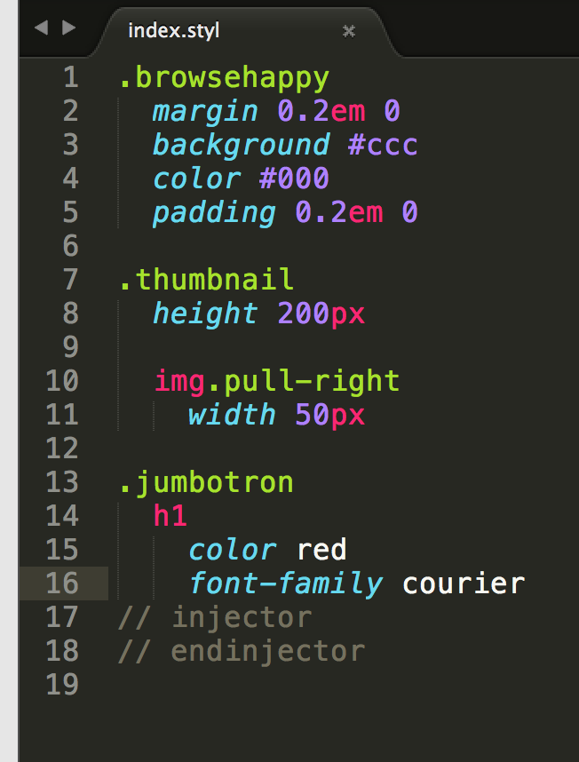
...on file save will instantly render our app without refresh in our browser:
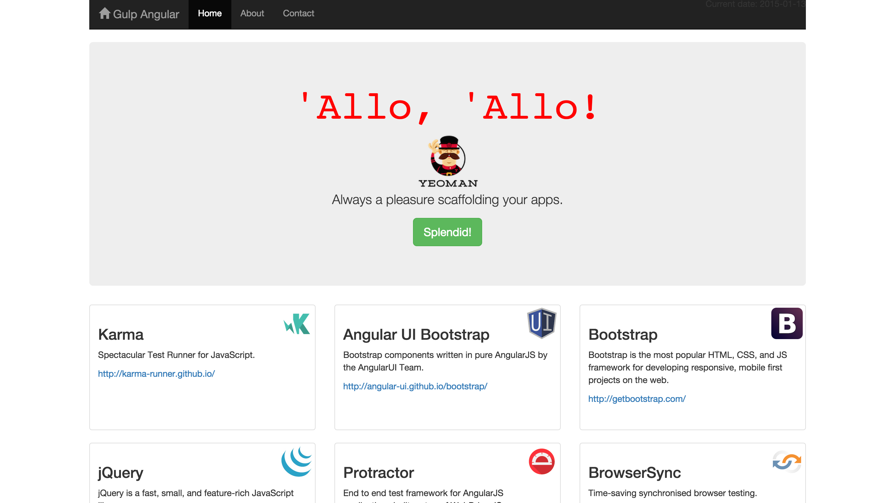
Talk about smooth moves.
You 'da man, Yeoman
If you want to get up and running with projects faster, I highly recommend adding Yeoman into your development workflow. You'll save time and plenty of headaches, and a build tool like Gulp or Grunt will keep you in the flow when making changes to your dependencies or files. If you encounter any issues setting up Yeoman feel free to reach out to me below!